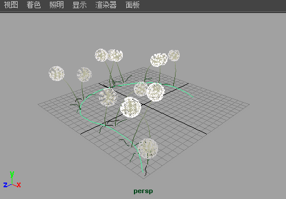

如果在透视视图的栅格上绘制，则笔划将位于该平面上。

在透视视图的栅格平面上绘制
- 选择。
- 确保场景中没有可绘制对象。若要执行该操作，请在场景视图中，通过在场景上不是对象的任意位置单击鼠标，取消选择全部对象，然后选择。
- 在“内容浏览器”(Content Browser)（在“建模”(Modeling)菜单集中，选择）中或工具架上，单击绘制时要使用的笔刷预设。
- 如有必要，请修改笔划设置（“生成 > Paint Effects 工具”(Generate > Paint Effects Tool) >
 ）。有关修改笔划设置的信息，请参见 Paint Effects 工具选项。
）。有关修改笔划设置的信息，请参见 Paint Effects 工具选项。
- 如有必要，请修改笔刷属性（，或者使用 Ctrl-b（Linux 和 Windows）或 Control-b (Mac OS X) 热键组合）。有关修改笔刷属性的信息，请参见 Paint Effects 笔刷设置。
提示： 可在画布上使用热键，以便交互式地更改“热键编辑器”(Hotkey Editor)中“笔刷工具”(Brush Tools)下的“全局比例”(Global Scale)（设定 ModifyUpperRadius，默认热键：B）、仅“笔刷宽度”(Brush Width)（设定 ModifyLowerRadius）和“笔划偏移”(Stroke Offset)（设定 ModifyDisplacement，默认热键：M）。有关其他 Paint Effects 热键的信息，请参见准备使用 Paint Effects 中的使用默认 Paint Effects 热键。
- 在场景视图或场景绘制视图中，跨平面进行拖动。
有关场景绘制视图的信息，请参见在场景绘制视图中更改对象着色。有关在场景绘制视图中进行工作的信息，请参见在曲面上自动绘制多个笔划。